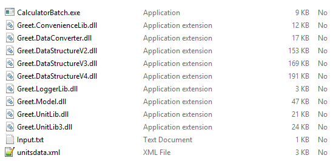
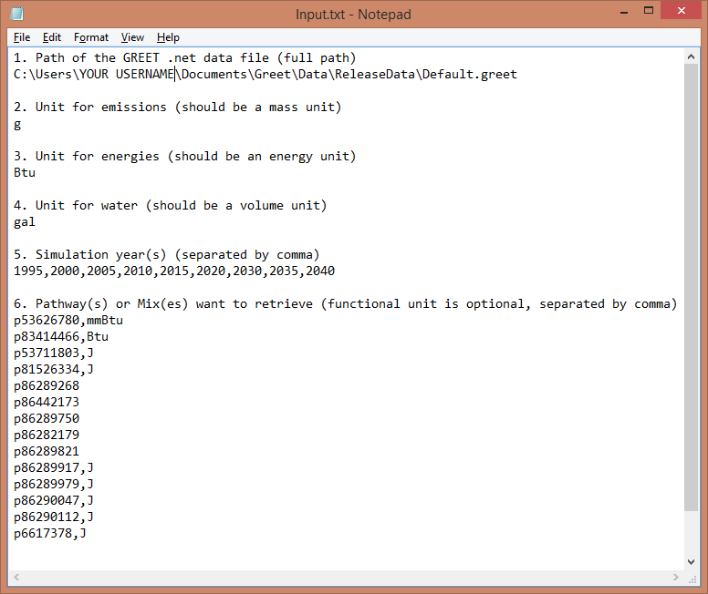
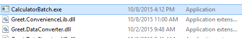
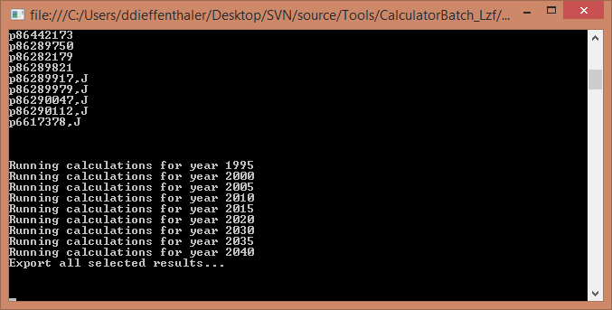
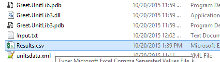
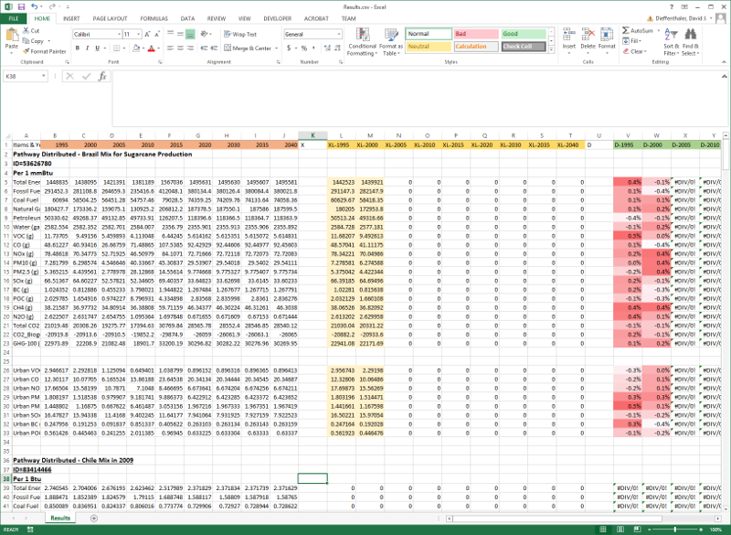

|
Please start downloading the tool by clicking here. Then open the zip file and copy all the files into a folder.
In that folder you should now have the following files:

Step 2: Set your preferences
Please edit the file Inputs.txt in order to select which years you want to run the simulations for and which pathways and mixes results you wish to save.
In order to do so, open the Inputs.txt file with a text editor of your choice, for example use Notepad:

In that file you have to perform the following changes:
- 1. Change the path of the file so that it corresponds to the location of the GREET file on your computer (probably you just need to change the username in the path)
- 2. Set the unit for emissions results, you can leave the default to grams so that it matches results in Excel
- 3. Set the unit for resources results, you can leave the default to Btu so that it matches results in Excel
- 4. Set the unit for emissions volumes results, you can leave the default to gallons so that it matches water results in Excel
- 5. Enter the simulation years you want to run the simulations for separated by a comma
- 6. Enter each pathway ID or mix ID you want to save the results for.
In that example the first line will save the results for pathway 'p' ID 53626780, using the functional unit: 1 mmBtu.
You can also save mixes results by preceding the ID with the letter 'm'.
You can skip the functional unit in which case the functional unit saved into the pathway will be used.
Step 3: Run the tool
This is the easiest part, just run the tool by double clicking 'CalculatorBatch.exe'

Then let the application run all the simulations years:

Step 4: Open the Results.csv file with Excel
In the same folder as 'CalculatorBatch.exe' you should now see a file called 'Results.csv' please open it using Excel

You'll see that this file contains the data for the pathways you selected, and also placeholder to paste the results from Excel.
Now you just have to go to Excel and run as many simulations as needed to fill out the data.
WARNING: The Results.csv file is overwritten by the batch tool, so save it with another name if you do not want to loose the work you did by manually copy pasting from Excel.

Column A: The names of the pollutants and resources groups in the first column
Column B-J: The simulation results for different years in.net
Column L-T: The placeholder for Excel results for different years
Column V-AD: The relative difference between the results
Tips: Add the color coding of your choice to make the results easier to see. We usually use the absolute values of the relative differences for conditional formatting.
|